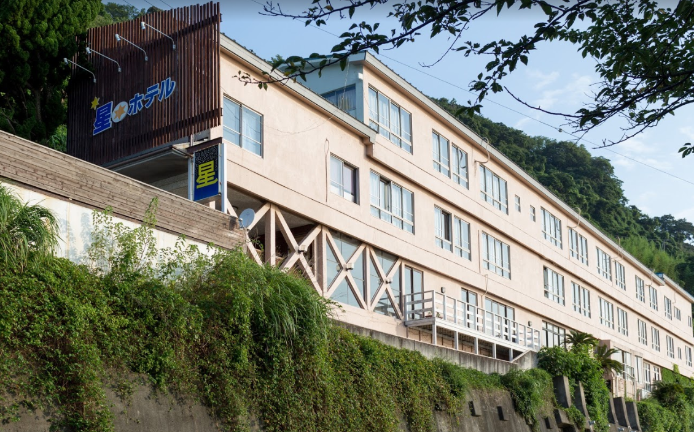
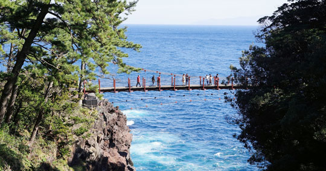
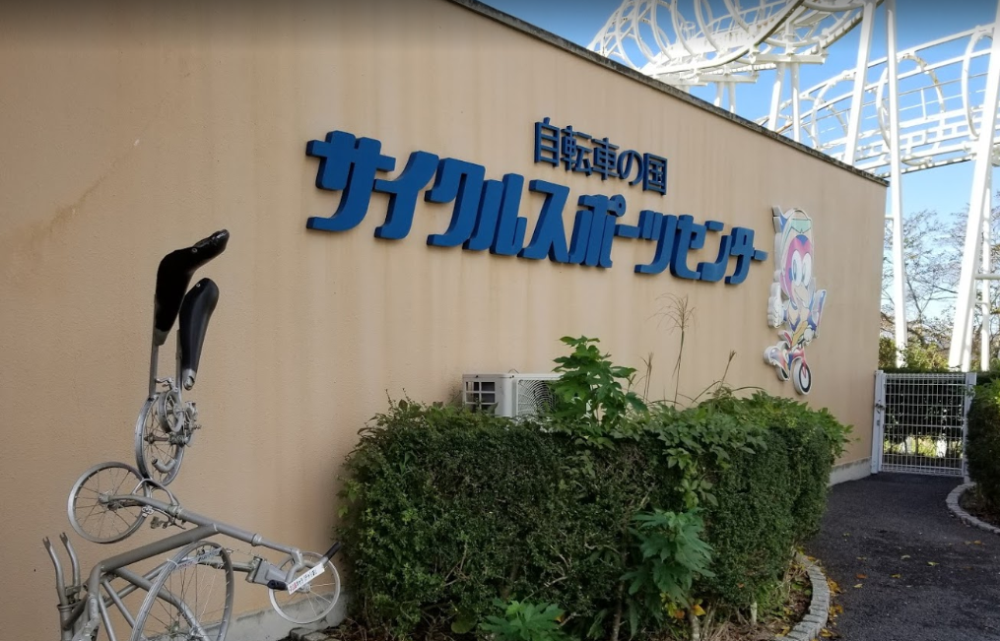

星ホテル

海が見える宿、あと猫がいるらしい。調べてみるとなかなか内装の写真が出てこなかったのでもしかしたらボロボロかもしれない...どちらにしてもレビューは高いから期待できるね！
城ケ崎海岸

大室山の噴火によって形成された絶壁らしい。見どころは崖にかかってる吊り橋！俺は途中で歩けなくなりそうな予感がする。
大室山

さゆが行ったことあるという山。アーチェリー対決によって今後さゆが弓道部出身と名乗れるかどうかが決まる。集中していくぞ！
伊豆シャボテン動物公園

露天風呂のカピバラが有名らしい。ちなみに俺は入浴するカピバラはバイオパークとシーパラで見たことがある。動物園の目玉はやっぱり餌やり！
サイクルスポーツセンター

実はサイクリストの聖地でおなじみの修善寺がある伊豆。ここでは変わった自転車にいろいろ乗ることができる。さゆはすでにおなか一体だと思うけど笑。